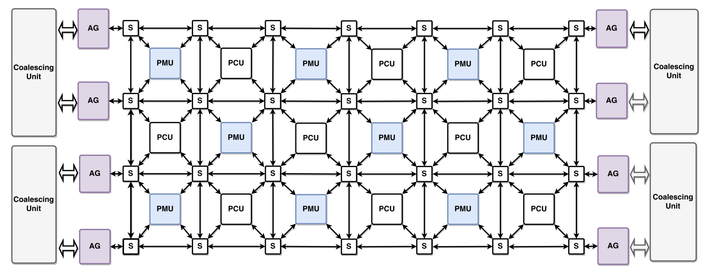

Publications

Sigma: Compiling Einstein Summations to Locality-Aware Dataflow
Tian Zhao, Alex Rucker, Kunle Olukotun
ASPLOS '23
Paper PDF
Homunculus: Auto-Generating Efficient Data-Plane ML Pipelines for Datacenter Networks
Tushar Swamy, Annus Zulfiqar, Luigi Nardi, Muhammad Shahbaz, Kunle Olukotun
ASPLOS '23
Paper PDF
The Sparse Abstract Machine
Olivia Hsu, Maxwell Strange, Jaeyeon Won, Ritvik Sharma, Kunle Olukotun, Joel Emer, Mark Horowitz, Fredrik
Kjolstad
ASPLOS '23
Paper PDF
Accelerating SLIDE: Exploiting Sparsity on Accelerator Architectures
Sho Ko, Alexander Rucker, Yaqi Zhang, Paul Mure, Kunle Olukotun
IPDPSW '22
Paper PDF
Taurus: a data plane architecture for per-packet ML
Tushar Swamy, Alex Rucker, Muhammad Shahbaz, Ishan Gaur, Kunle Olukotun
ASPLOS '22
Paper PDF
Compilation of sparse array programming models
Rawn Henry, Olivia Hsu, Rohan Yadav, Stephen Chou, Kunle Olukotun, Saman Amarasinghe, Fredrik Kjolstad
OOPSLA '21
Paper PDF
Bayesian Optimization with a Prior for the Optimum
Artur Souza, Luigi Nardi, Leonardo B. Oliveira, Kunle Olukotun, Marius Lindauer, and Frank Hutter
ECML-PKDD '21
Paper PDF
Learning of Parameters in Bahavior Trees for Movement Skills
Matthias Mayr, Konstantinos Chatzilygeroudis, Faseeh Ahmad, Luigi Nardi, Kunle Olukotun, and Volker Krueger
Int. Conf. on Intelligent Robots and Systems (IROS) '21
Paper PDF
High performance lattice regression on FPGAs via a high level hardware description
language
Nathan Zhang, Matthew Feldman, Kunle Olukotun
(ICFPT '21) International Conference on Field-Programmable Technology
Paper PDF
SARA: Scaling a Reconfigurable Dataflow Accelerator
Yaqi Zhang, Nathan Zhang, Tian Zhao, Matthew Vilim, Muhammad Shahbaz, Kunle Olukotun
ISCA '21: ACM/IEEE 48th Annual International Symposium on Computer Architecture
Paper PDF
Gorgon: Accelerating machine learning from relational data
Matthew Vilim, Alexander Rucker, Yaqi Zhang, Sophia Liu, Kunle Olukotun
ISCA '21
Paper PDF
Capstan: A vector RDA for sparsity
Alexander Rucker, Matthew Vilim, Tian Zhao, Yaqi Zhang, Raghu Prabhakar, Kunle Olukotun
MICRO-54: 54th Annual IEEE/ACM International Symposium on Microarchitecture
Paper PDF
Polystore++: Accelerated Polystore System for Heterogeneous Workloads
Rekha Singhal, Nathan Zhang, Luigi Nardi, Muhammad Shahbaz, Kunle Olukotun
ICDCS '19: IEEE 39th International Conference on Distributed Computing Systems
Paper PDF
Analysis of DAWNBench, a Time-to-Accuracy Machine Learning Performance Benchmark
Cody Coleman, Daniel Kang, Deepak Narayanan, Luigi Nardi, Tian Zhao, Jian Zhang, Peter Bailis,
Kunle Olukotun, Chris Ré, Matei Zaharia
ACM SIGOPS 2019
Paper PDF
Bayesian Optimization with a Prior for the Optimum
Artur Souza, Luigi Nardi, Leonardo B. Oliveira, Kunle Olukotun, Marius Lindauer, and Frank
Hutter
ACM SIGOPS 2019
Paper PDF
Practical Design Space Exploration
Luigi Nardi, David Koeplinger, Kunle Olukotun
MASCOTS '19: The 27th IEEE International Symposium on the Modeling, Analysis, and Simulation of Computer
and Telecommunication Systems
Paper PDF |
Slides
TensorFlow to Cloud FPGAs: Tradeoffs for Accelerating Deep Neural Networks
Stefan Hadjis, Kunle Olukotun
FPL'19: In Proceedings of the 29th IEEE International Conference on Field Programmable Logic and
Applications, Barcelona, Spain
Paper PDF
Taurus: An Intelligent Data Plane
Tushar Swamy, Alexander Rucker, Muhammad Shahbaz, Kunle Olukotun
P4 Workshop '19: Proceedings of the P4 Workshop
Paper PDF
Elastic RSS: Co-Scheduling Packets and Cores Using Programmable NICs
Alexander Rucker, Tushar Swamy, Muhammad Shahbaz, Kunle Olukotun
APNET '19: Proceedings of the 3rd Asia-Pacific Workshop on Networking
Paper PDF
Efficient Multiway Hash Join on Reconfigurable Hardware
Rekha Singhal, Yaqi Zhang, Jeffrey D. Ullman, Raghu Prabhakar,
Kunle Olukotun
TPCTC '19: The 11th TPC Technology Conference on Performance Evaluation & Benchmarking, Los Angeles, CA
Paper PDF |
Slides
Scalable Interconnects for Reconfigurable Spatial Architectures
Yaqi Zhang, Alexander Rucker, Matthew Vilim, Raghu Prabhakar, William Hwang,
Kunle Olukotun
ISCA '19: The 46th International Symposium on Computer Architecture, Phoenix, AZ
Paper PDF |
Slides |
Slides
Serving Recurrent Neural Networks Efficiently with a Spatial Architecture
Tian Zhao, Yaqi Zhang, Kunle Olukotun
SysML '19: The Conference on Systems and Machine Learning
Paper PDF |
Slides
Spatial: A Language and Compiler for Application Accelerators
David Koeplinger, Matthew Feldman, Raghu Prabhakar, Yaqi Zhang, Stefan Hadjis, Ruben Fiszel, Tian Zhao,
Luigi Nardi, Ardavan Pedram, Christos Kozyrakis, Kunle Olukotun
PLDI '18: Programming Language Design and Implementation
Paper PDF
Plasticine: A Reconfigurable Architecture For Parallel Patterns
Raghu Prabhakar, Yaqi Zhang, David Koeplinger, Matt Feldman, Tian Zhao, Stefan Hadjis, Ardavan Pedram,
Christos Kozyrakis, Kunle Olukotun
ISCA '17: 44th International Symposium on Computer Architecture,
Top Picks special issue
of IEEE Micro (May / June 2018)
Paper PDF
Understanding and Optimizing Asynchronous Low-Precision Stochastic Gradient Descent
Christopher De Sa, Matt Feldman, Christopher Ré, Kunle Olukotun
ISCA '17: 44th International Symposium on Computer Architecture
Paper PDF
EmptyHeaded: A Relational Engine for Graph Processing
Christopher R. Aberger, Susan Tu, Kunle Olukotun, and Christopher Ré
SIGMOD '16: Special Interest Group on Management of Data, June 2016. (Best Of Award)
Paper PDF |
Slides
Ensuring Rapid Mixing and Low Bias for Asynchronous Gibbs Sampling
Christopher De Sa, Kunle Olukotun, and Christopher Ré
ICML '16: Proceedings of the 33rd Intl. Conference on Machine Learning, June 2016. (Best Paper
Award)
Paper PDF |
Slides |
Poster
Automatic Generation of Efficient Accelerators for Reconfigurable Hardware
David Koeplinger, Raghu Prabhakar, Yaqi Zhang, Christina Delimitrou, Christos Kozyrakis, and Kunle
Olukotun
ISCA '16: 43rd International Symposium on Computer Architecture, June 2016.
Paper PDF |
Slides
Generating Configurable Hardware from Parallel Patterns
Raghu Prabhakar, David Koeplinger, Kevin J. Brown, HyoukJoong Lee, Christopher De Sa, Christos Kozyrakis,
and Kunle Olukotun
ASPLOS '16: 21st International Conference on Architectural Support for Programming Languages and
Operating Systems, April 2016.
Paper PDF
Have Abstraction and Eat Performance, Too: Optimized Heterogeneous Computing with Parallel
Patterns
Kevin J. Brown, HyoukJoong Lee, Tiark Rompf, Arvind K. Sujeeth, Christopher De Sa, Christopher Aberger, and
Kunle Olukotun
CGO '16: International Symposium on Code Generation and Optimization, March 2016.
Paper PDF
Rapidly Mixing Gibbs Sampling for a Class of Factor Graphs Using Hierarchy Width
Christopher De Sa, Ce Zhang, Christopher Ré, and Kunle Olukotun
NIPS '15: Proceedings of the 28th Neural Information Processing Systems Conference, December
2015.
Paper PDF |
Poster
Taming the Wild: A Unified Analysis of Hogwild!-Style Algorithms
Christopher De Sa, Ce Zhang, Christopher Ré, and Kunle Olukotun
NIPS '15: Proceedings of the 28th Neural Information Processing Systems Conference, December
2015.
Paper PDF |
Poster
Global Convergence of Stochastic Gradient Descent for Some Non-convex Matrix Problems
Christopher De Sa, Kunle Olukotun, and Christopher Ré
ICML '15: Proceedings of the 32nd Intl. Conference on Machine Learning, July 2015.
Paper PDF |
Slides |
Poster
Locality-Aware Mapping of Nested Parallel Patterns on GPUs
HyoukJoong Lee, Kevin J. Brown, Arvind K. Sujeeth, Tiark Rompf, and Kunle Olukotun
MICRO'14: 47th International Symposium on Microarchitecture, December 2014.
Paper PDF |
Slides |
Poster
Delite: A Compiler Architecture for Performance-Oriented Embedded Domain-Specific
Languages
Arvind K. Sujeeth, Kevin J. Brown, HyoukJoong Lee, Tiark Rompf, Hassan Chafi, Martin Odersky, and Kunle
Olukotun
TECS'14: ACM Transactions on Embedded Computing Systems, July 2014.
Paper PDF
Simplifying Scalable Graph Processing with a Domain-Specific Language
Sungpack Hong, Semih Salihoglu, Jennifer Widom, and Kunle Olukotun
CGO'14: International Symposium on Code Generation and Optimization, February 2014.
Paper PDF
Hardware Acceleration of Database Operations
Jared Casper and Kunle Olukotun
FPGA '14: Proceedings of the 2014 ACM/SIGDA international symposium on Field-programmable gate
arrays, February 2014.
Paper PDF |
Slides
On Fast Parallel Detection of Strongly Connected Components (SCC) in Small-World
Graphs
Sungpack Hong, Nicole C. Rodia, and Kunle Olukotun
SC'13: International Conference for High Performance Computing, Networking, Storage, and Analysis,
November 2013.
Paper PDF |
Slides |
Code
Forge: Generating a High Performance DSL Implementation from a Declarative
Specification
Arvind K. Sujeeth, Austin Gibbons, Kevin J. Brown, HyoukJoong Lee, Tiark Rompf, Martin Odersky, and Kunle
Olukotun
GPCE'13: 12th International Conference on Generative Programming: Concepts & Experiences,
October 2013.
Paper PDF
Composition and Reuse with Compiled Domain-Specific Languages
Arvind K. Sujeeth, Tiark Rompf, Kevin J. Brown, HyoukJoong Lee, Hassan Chafi, Victoria Popic, Michael Wu,
Aleksander Prokopec, Vojin Jovanovic, Martin Odersky, and Kunle Olukotun
ECOOP'13: European Conference on Object-Oriented Programming, July 2013.
Paper PDF
Optimizing Data Structures in High-Level Programs: New Directions for Extensible Compilers based on
Staging
Tiark Rompf, Arvind K. Sujeeth, Nada Amin, Kevin J. Brown, Vojin Jovanovic, HyoukJoong Lee, Manohar
Jonnalagedda, Kunle Olukotun, and Martin Odersky
POPL'13: 40th ACM SIGPLAN-SIGACT Symposium on Principles of Programming Languages, January
2013.
Paper PDF |
Slides
A Case of System-level Hardware/Software Co-design and Co-verification of a Commodity
Multi-Processor System with Custom Hardware
Sungpack Hong, Tayo Oguntebi, Jared Casper, Nathan Bronson, Christos Kozyrakis, and Kunle Olukotun
CODES+ISSS'12: 17th International Conference on Hardware/Software Codesign and System Synthesis,
October 2012.
Paper PDF |
Slides
Green-Marl: A DSL for Easy and Efficient Graph Analysis
Sungpack Hong, Hassan Chafi, Eric Sedlar, and Kunle Olukotun
ASPLOS '12: 17th International Conference on Architectural Support for Programming Languages and
Operating Systems, March 2012.
Paper PDF |
Slides
SCD: A Scalable Coherence Directory with Flexible Sharer Set Encoding
Daniel Sanchez and Christos Kozyrakis
HPCA '12: 18th international Symposium on High Performance Computer Architecture, February
2012.
Paper PDF |
Slides
CudaDMA: Optimizing GPU Memory Bandwidth via Warp Specialization
Michael Bauer, Henry Cook, and Brucek Khailany
SC '11: Proceedings of the 2011 ACM/IEEE International Conference for High Performance Computing,
Networking, Storage and Analysis, November 2011.
Paper PDF |
Slides
Liszt: A Domain Specific Language for Building Portable Mesh-based PDE Solvers
Zachary DeVito, Niels Joubert, Francisco Palacios, Stephen Oakley, Montserrat Medina, Mike Barrientos, Erich
Elsen, Frank Ham, Alex Aiken, Karthik Duraisamy, Eric Darve, Juan Alonso, and Pat Hanrahan
SC '11: Proceedings of the 2011 ACM/IEEE International Conference for High Performance Computing,
Networking, Storage and Analysis, November 2011.
Paper PDF |
Slides
Dynamic Fine-Grain Scheduling of Pipeline Parallelism
Daniel Sanchez, David Lo, Richard M. Yoo, Jeremy Sugerman, and Christos Kozyrakis
PACT '11: 20th International Conference on Parallel Architectures and Compilation Techniques,
October 2011.
Paper PDF |
Slides
Efficient Parallel Graph Exploration on Multi-Core CPU and GPU
Sungpack Hong, Tayo Oguntebi, and Kunle Olukotun
PACT '11: 20th International Conference on Parallel Architectures and Compilation Techniques,
October 2011.
Paper PDF |
Slides
A Heterogeneous Parallel Framework for Domain-Specific Languages
Kevin J. Brown, Arvind K. Sujeeth, HyoukJoong Lee, Tiark Rompf, Hassan Chafi, Martin Odersky, and Kunle
Olukotun
PACT '11: 20th International Conference on Parallel Architectures and Compilation Techniques,
October 2011.
Paper PDF |
Slides
Implementing Domain-Specific Languages for Heterogeneous Parallel Computing
HyoukJoong Lee, Kevin J. Brown, Arvind K. Sujeeth, Hassan Chafi, Tiark Rompf, Martin Odersky, and Kunle
Olukotun
IEEE Micro: Special Issue on CPU, GPU, and Hybrid Computing, September 2011.
Paper PDF
Building-Blocks for Performance Oriented DSLs
Tiark Rompf, Arvind K. Sujeeth, HyoukJoong Lee, Kevin J. Brown, Hassan Chafi, Martin Odersky, and Kunle
Olukotun
DSL '11: IFIP Working Conference on Domain-Specific Languages, September 2011.
Paper PDF |
Slides
OptiML: An Implicitly Parallel Domain-Specific Language for Machine Learning
Arvind K. Sujeeth, HyoukJoong Lee, Kevin J. Brown, Tiark Rompf, Hassan Chafi, Michael Wu, Anand R. Atreya,
Martin Odersky, and Kunle Olukotun
ICML '11: Proceedings of the 28th Intl. Conference on Machine Learning, June 2011.
Paper PDF |
Slides
Vantage: Scalable and Efficient Fine-Grain Cache Partitioning
Daniel Sanchez and Christos Kozyrakis
ISCA '11: Proceedings of the 38th Intl. Symposium on Computer Architecture, June 2011.
Paper PDF |
Slides
Hardware Acceleration of Transactional Memory on Commodity Systems
Jared Casper, Tayo Oguntebi, Sungpack Hong, Nathan G. Bronson, Christos Kozyrakis, and Kunle Olukotun
ASPLOS '11: Proceedings of the 16th Intl. Conference on Architectural Support for Programming Languages
and Operating Systems, March 2011.
Paper PDF |
Slides
Programming the Memory Hierarchy Revisited: Supporting Irregular Parallelism in
Sequoia
Michael Bauer, John Clark, Eric Schkufza, and Alex Aiken
PPoPP '11: Proceedings of the 16th Annual Symposium on Principles and Practice of Parallel
Programming, February 2011.
Paper PDF
Accelerating CUDA Graph Algorithms at Maximum Warp
Sungpack Hong, Sang Kyun Kim, Tayo Oguntebi, and Kunle Olukotun
PPoPP '11: Proceedings of the 16th Annual Symposium on Principles and Practice of Parallel
Programming, February 2011.
Paper PDF |
Slides
A Domain-Specific Approach to Heterogeneous Parallelism
Hassan Chafi, Arvind K. Sujeeth, Kevin J. Brown, HyoukJoong Lee, Anand R. Atreya, and Kunle Olukotun
PPoPP '11: Proceedings of the 16th Annual Symposium on Principles and Practice of Parallel
Programming, February 2011.
Paper PDF |
Slides
EigenBench: A Simple Exploration Tool for Orthogonal TM Characterisitics
Sungpack Hong, Tayo Oguntebi, Jared Casper, Nathan Bronson, Christos Koyrakis, and Kunle Olukotun
IISWC '10: Proceedings of the IEEE International Symposium on Workload Characteristics, December
2010. (Best Paper Award)
Paper PDF |
Slides
The ZCache: Decoupling Ways and Associativity
Daniel Sanchez and Christos Kozyrakis
Micro '10: Proceedings of the 43rd Intl. Symposium on Microarchitecture, December 2010.
Paper PDF |
Slides
Language Virtualization for Heterogeneous Parallel Computing
Hassan Chafi, Zach DeVito, Adriaan Moors, Tiark Rompf, Arvind K. Sujeeth, Pat Hanrahan, Martin Odersky, and
Kunle Olukotun
Onward! '10: Proceedings of the ACM International Conference on Object Oriented Programming Systems
Languages and Applications, October 2010.
Paper PDF |
Slides
Transactional Predication: High-Performance Concurrent Sets and Maps for STM
Nathan G. Bronson, Jared Casper, Hassan Chafi, and Kunle Olukotun
PODC '10: Proceedings of the 29th Annual ACM Conference on Principles of Distributed Computing,
July 2010.
Paper PDF |
Slides
Implementing and Evaluating Nested Parallel Transactions in Software Transactional
Memory
Woongki Baek, Nathan Bronson, Christos Kozyrakis, and Kunle Olukotun
SPAA '10: Proceedings of the 22nd ACM Symposium on Parallelism in Algorithms and Architectures,
June 2010.
Paper PDF |
Slides
Making Nested Parallel Transactions Practical using Lightweight Hardware Support
Woongki Baek, Nathan Bronson, Christos Kozyrakis, and Kunle Olukotun
ICS '10: Proceedings of the 24th Intl. Conference on Supercomputing, June 2010.
Paper PDF |
Slides
Understanding Sources of Inefficiency in General-Purpose Chips
Rehan Hameed, Wajahat Qadeer, Megan Wachs, Omid Azizi, Alex Solomatnikov, Benjamin C. Lee, Stephen
Richardson, Christos Kozyrakis, and Mark Horowitz
ISCA '10: Proceedings of the 37th Intl. Symposium on Computer Architecture, June 2010.
Paper
PDF |
Slides
Evaluating Bufferless Flow Control for On-Chip Networks
George Michelogiannakis, Daniel Sanchez, William J. Dally, and Christos Kozyrakis
NOCS '10: Proceedings of the 4th ACM/IEEE International Symposium on Networks-on-Chip, May
2010.
Paper
PDF |
Slides
A Large-scale Architecture for Restricted Boltzmann Machines
Sang Kyun Kim, Peter L. McMahon, and Kunle Olukotun
FCCM '10: Proceedings of the IEEE Symposium on Field-Programmable Custom Computing Machines, May
2010.
Paper PDF
FARM: A Prototyping Environment for Tightly-Coupled, Heterogeneous Architectures
Tayo Oguntebi, Sungpack Hong, Jared Casper, Nathan Bronson, Christos Kozyrakis, and Kunle Olukotun
FCCM '10: The 18th Annual International IEEE Symposium on Field-Programmable Custom Computing
Machines, May 2010.
Paper PDF |
Slides
An Analysis of On-Chip Interconnection Networks for Large-Scale Chip Multiprocessors
Daniel Sanchez, George Michelogiannakis, and Christos Kozyrakis
TACO: ACM Transactions on Architecture and Code Optimization, April 2010.
Paper
PDF
CCSTM: A Library-Based STM for Scala
Nathan G. Bronson, Hassan Chafi, and Kunle Olukotun
The First Annual Scala Workshop at Scala Days 2010, April 2010.
Paper PDF |
Slides
Implementing and Evaluating a Model Checker for Transactional Memory Systems
Woongki Baek, Nathan G. Bronson, Christos Kozyrakis, and Kunle Olukotun
ICECCS '10: Proceedings of the 15th IEEE International Conference on Engineering of Complex Computer
Systems, March 2010.
Paper PDF
Flexible Architectural Support for Fine-Grain Scheduling
Daniel Sanchez, Richard Yoo, and Christos Kozyrakis
ASPLOS '10: Proceedings of the 15th Intl. Conference on Architectural Support for Programming Languages
and Operating Systems, March 2010.
Paper PDF
A Practical Concurrent Binary Search Tree.
Nathan G. Bronson, Jared Casper, Hassan Chafi, and Kunle Olukotun
PPoPP '10: Proceedings of the 15th Annual Symposium on Principles and Practice of Parallel
Programming, January 2010.
Paper PDF |
Slides
Phoenix Rebirth: Scalable MapReduce on a Large-Scale Shared-Memory System
Richard M. Yoo, Anthony Romano, and Christos Kozyrakis
IISWC '09: Proceedings of the 2009 IEEE International Symposium on Workload Characterization,
October 2009.
Paper PDF
A Highly Scalable Restricted Boltzmann Machine FPGA Implementation
Sang Kyun Kim, Lawrence C. McAfee, Peter L. McMahon, and Kunle Olukotun
FPL '09: Proceedings of the IEEE Conference on Field Programmable Logic and Applications, September
2009.
Paper PDF
GRAMPS: A Programming Model for Graphics Pipelines
Jeremy Sugerman, Kayvon Fatahalian, Solomon Boulos, Kurt Akeley, and Pat Hanrahan
ACM Transactions on Graphics, January 2009.
Paper PDF
Feedback-Directed Barrier Optimization in a Strongly Isolated STM
Nathan G. Bronson, Christos Kozyrakis, and Kunle Olukotun
POPL '09: Proceedings of the 36th Annual ACM SIGPLAN-SIGACT Symposium on Principals of Programming
Languages, January 2009.
Paper PDF |
Slides

{kind=link}